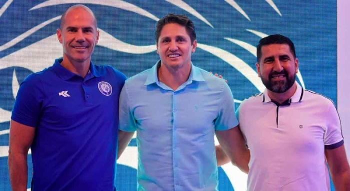
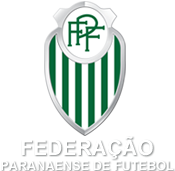

FOZ DO IGUAÇU FC
torne-se socio torcedor do azulao da fronteira!!
BENEFICIOS :
-desconto de ingressos
-acesso a cadeiras exclusivas
-sorteios para assinantes


o atual presidente do clube edmilson,pentacampeão mundial, veio para mudar a situaçao do clube parananse colocando mais projetos para o clube e para o torcedor!!
VALORES DO PLANO :
Foz Cataratas sócio-torcedor adulto: R$ 133 x 3 = R$ 399; sócio-torcedor adulto (renovação): R$ 99 x 3 = R$ 297; sócio-torcedor infantil (até 12 anos): R$ 35 x 3 = R$ 105
para mais informaçoes entre em contato pelo site oficial pelo link ABAIXO:
AQUI!!